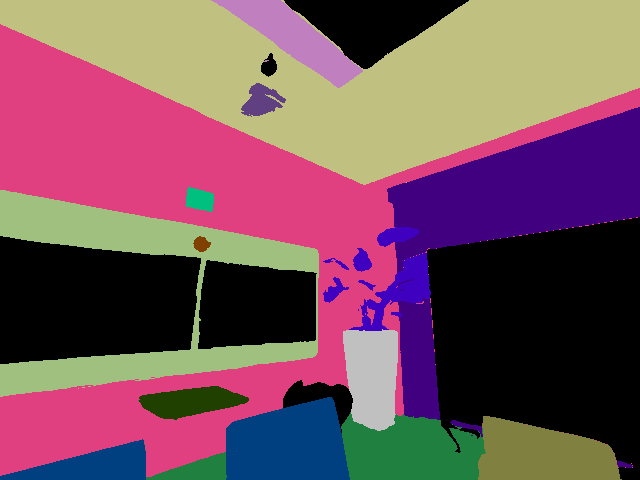
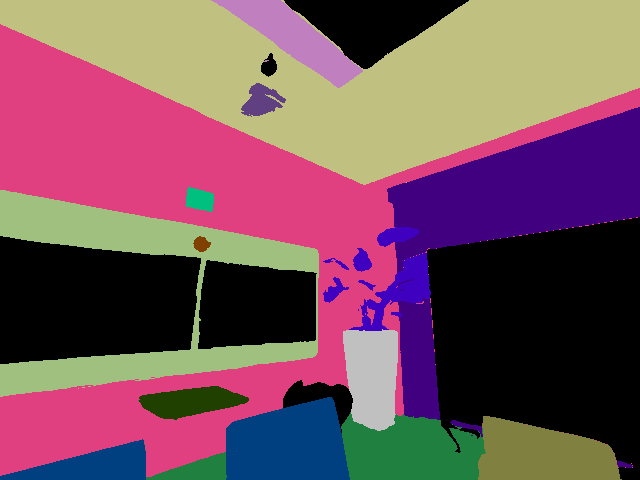
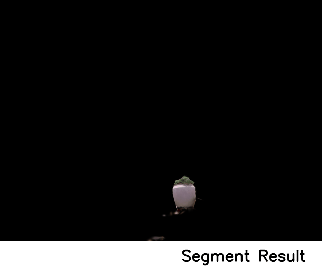
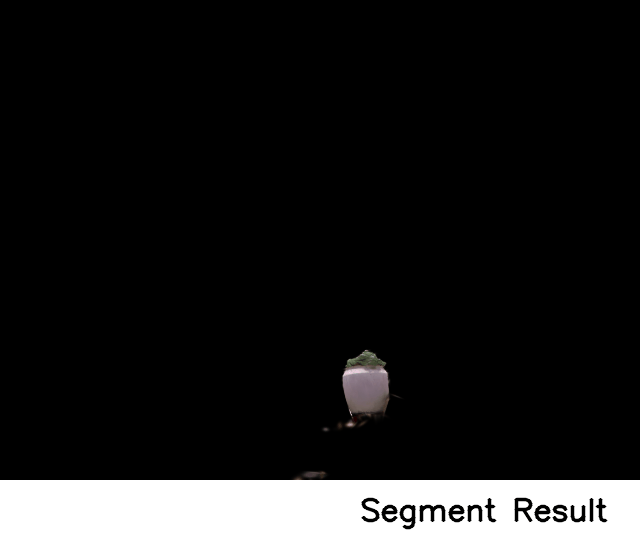

Zero-shot neural scene segmentation, which reconstructs 3D neural segmentation field without manual annotations, serves as an effective way for scene understanding. However, existing models, especially the efficient 3D Gaussian-based methods, struggle to produce compact segmentation results. This issue stems primarily from their redundant learnable attributes assigned on individual Gaussians, leading to a lack of robustness against the 3D-inconsistencies in zero-shot generated raw labels. To address this problem, our work, named Compact Segmented 3D Gaussians (CoSegGaussians), proposes the Feature Unprojection and Fusion module as the segmentation field, which utilizes a shallow decoder generalizable for all Gaussians based on high-level features. Specifically, leveraging the learned Gaussian geometric parameters, semantic-aware image-based features are introduced into the scene via our unprojection technique. The lifted features, together with spatial information, are fed into the multi-scale aggregation decoder to generate segmentation identities for all Gaussians. Furthermore, we design CoSeg Loss to boost model robustness against 3D-inconsistent noises. Experimental results show that our model surpasses baselines on zero-shot semantic segmentation task, improving by ~10% mIoU over the best baseline.
Given only posed RGB images of a 3D scene, our method aims to build an expressive representation to capture the scene's geometry, appearance together with the high-quality segmentation identities. The proposed model, CoSegGaussians, enables compact neural scene segmentation, generating segmentation from novel views in a 3D-consistent fashion.

Use the slider to observe rendered semantic & panoptic segmentation maps from various viewpoints of different methods.
RGB
Semantic(Gaussian Grouping)
Panoptic(Gaussian Grouping)
Semantic(Ours)
Panoptic(Ours)
We've visualized the feature field obtained through DINO feature unprojection.


Text-prompted segmentation results are provided as an application of our method, based on 2D language-guided segmentation method Text2Seg.


 

Scene manipulation results are provided as another application.
Before Manipulation
Gaussian Grouping
Ours

Before Manipulation
Gaussian Grouping
Ours
Here are some related works for 3D scene segmentation, such as DFF, Panoptic-Lifting, Gaussian Grouping, Feature 3DGS, etc.